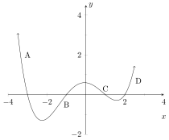

This section shows and explains graphical examples of function curvature.
Another common aspect of the graph of a function, is the graphs curvature. In
general, curvature (like local extrema) is difficult to determine without tools from
calculus and as such, it is a major area of study in calculus. However, for this
class we will restrict ourselves to a description of what different types of
curvature ‘look like’ on a graph so that we can identify curvature types visually.
One typically refers to the curvature as a combination of whether the function is
increasing or decreasing, and whether it is concave up or concave down. We will
describe each of these terms/features by themselves and then give graphical
representations of their combinations which may be more helpful to understanding.
(The graphical representation tends to be easier to understand than the
description, so if you don’t understand the description immediately try looking at the
graphs and then return to the analytic descriptions to see if you can figure out what
they are saying.)
Increasing:
A function is increasing on an interval if, for every single pair of
values and such that , we have . In ‘human speak’ a function is increasing on an interval , if larger numbers
in that interval always get sent to larger values by .
Decreasing:
A function is decreasing on an interval if, for every single pair of
values and such that , we have . In ‘human speak’ a function is decreasing on an interval , if larger numbers
in that interval always get sent to smaller values by .
Concave Up:
A function is concave up on an interval if, for every single pair
of values and such that , the inequality is true. In ‘human speak’ a function is concave up if the line connecting to is
always above the graph of for every value between and . Alternatively,
one can say an interval is concave up if the graph ‘bends upward’ as you
graph it from left to right.
Concave Down:
A function is concave down on an interval if, for every single
pair of values and such that , the inequality is true. In ‘human speak’ a function is concave down if the line connecting to is
always below the graph of for every value between and . Alternatively,
one can say an interval is concave down if the graph ‘bends downward’
as you graph it from left to right.
The following are graphical representations of various combinations of
increasing/decreasing and concave up/down;
Increasing and Concave Up:
Consider the graph for
Increasing and Concave down:
Consider the graph for
Decreasing and Concave Up:
Consider the graph for
Decreasing and Concave Down:
Consider the graph for
Combination of each of the above in the same graph:
Consider the graph of
the polynomial

Key:
Decreasing and Concave Up
Increasing and Concave Down
Decreasing and Concave Down
Increasing and Concave Up.
Thus we have all four combinations in one polynomial, which is not unusual for
higher degree polynomials.